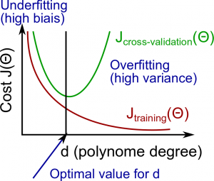
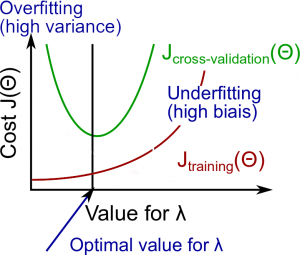

Applying machine learning - 27 December, 2016
Tags: machine learning
Errors in your predictions can be troubleshooted by:
- Getting more training examples
- Trying smaller sets of features
- Trying additional features
- Trying polynomial features
- Increasing or decreasing λ
It is good to use test error factor to understand the correctness of our algorithm:
\[\text{Test Error} = \dfrac{1}{m_{test}} \sum^{m_{test}}_{i=1} err(h_\Theta(x^{(i)}_{test}), y^{(i)}_{test})\]
and this factor is calculated using completely separate training set (test set).
Using Cross Validation Set our test set will give us an accurate, non-optimistic error.
One example way to break down our dataset into the three sets is:
- Training set: 60%
- Cross validation set: 20%
- Test set: 20% We can now calculate three separate error values for the three different sets.
With the Validation Set (note: this method presumes we do not also use the CV set for regularization)
- Optimize the parameters in Θ using the training set for each polynomial degree.
- Find the polynomial degree d with the least error using the cross validation set.
- Estimate the generalization error using the test set with
\(J_{test}(\Theta^{(d)})\), (d = theta from polynomial with lower error).
Diagnosing Bias vs. Variance
High bias is underfitting and high variance is overfitting.

Regularization and Bias/Variance
- Large λ: High bias (underfitting)
- Small λ: High variance (overfitting)

In order to choose the model and the regularization λ, we need:
- Create a list of lambda (i.e. λ∈{0,0.01,0.02,0.04,0.08,0.16,0.32,0.64,1.28,2.56,5.12,10.24});
- Select a lambda to compute;
- Create a model set like degree of the polynomial or others;
- Select a model to learn Θ;
- Learn the parameter Θ for the model selected, using
\(J_{train}(\Theta)\)with λ selected (this will learn Θ for the next step); - Compute the train error using the learned Θ (computed with λ ) on the
\(J_{train}(\Theta)\)without regularization or λ = 0; - Compute the cross validation error using the learned Θ (computed with λ) on the
\(J_{CV}(\Theta)\)without regularization or λ = 0; - Do this for the entire model set and lambdas, then select the best combo that produces the lowest error on the cross validation set;
- Now if you need visualize to help you understand your decision, you can plot to the figure like above with: (λ x Cost J
\(J_{train}(\Theta)\)and (λ x Cost\(J_{CV}(\Theta)\)); - Now using the best combo Θ and λ, apply it on
\(J_{test}(\Theta)\)to see if it has a good generalization of the problem. - To help decide the best polynomial degree and λ to use, we can diagnose with the learning curves.
Learning Curves
If a learning algorithm is suffering from high variance, getting more training data is likely to help. If a learning algorithm is suffering from high bias, getting more training data will not (by itself) help much.


Deciding What to Do Next Revisited
Decision process can be broken down as follows:
- Getting more training examples - Fixes high variance
- Trying smaller sets of features - Fixes high variance
- Adding features - Fixes high bias
- Adding polynomial features - Fixes high bias
- Decreasing λ - Fixes high bias
- Increasing λ - Fixes high variance
Diagnosing Neural Networks
- A neural network with fewer parameters is prone to underfitting. It is also computationally cheaper.
- A large neural network with more parameters is prone to overfitting. It is also computationally expensive. In this case you can use regularization (increase λ) to address the overfitting.
Using a single hidden layer is a good starting default. You can train your neural network on a number of hidden layers using your cross validation set.
Error Analysis
The recommended approach to solving machine learning problems is:
- Start with a simple algorithm, implement it quickly, and test it early.
- Plot learning curves to decide if more data, more features, etc. will help
- Error analysis: manually examine the errors on examples in the cross validation set and try to spot a trend.
It's important to get error results as a single, numerical value. Otherwise it is difficult to assess your algorithm's performance.
Error Metrics for Skewed Classes
Precision:
\[\dfrac{\text{True Positives}}{\text{Total number of predicted positives}}
= \dfrac{\text{True Positives}}{\text{True Positives}+\text{False positives}}\]
Recall:
\[\dfrac{\text{True Positives}}{\text{Total number of actual positives}}= \dfrac{\text{True Positives}}{\text{True Positives}+\text{False negatives}}\]
Trading Off Precision and Recall
A better way is to compute the F Score (or F1 score):
\[\text{F Score} = 2\dfrac{PR}{P + R}\]
In order for the F Score to be large, both precision and recall must be large. We want to train precision and recall on the cross validation set so as not to bias our test set.